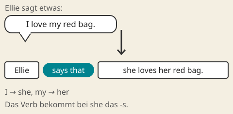

Mr Hill sagt, dass …: aus der Sprechblase wird ein Streifen
Mit einem KI-Tutor lernen
Ein KI-Tutor erklärt dir diese Seite und hilft dir bei den Aufgaben. Wähl deinen Assistenten:
Mit Claude öffnen Mit ChatGPT öffnen Mit Mistral Vibe öffnen
Du nutzt dein eigenes Konto beim Anbieter. Der Assistent ist kein Angebot von lernapps.net: lernapps liefert nur Inhalte und Aufgaben. Die Wahl gilt für alle Seiten, nur auf diesem Gerät.
Wie hängst du das an?
Mr Hill und Peter sagen gerade etwas, und es gilt noch. Du liest gleich den Chat von Sophie, Amir und Ellie. Davor eine Frage zu Kapitel 1.
Aufgabe
Lösung
mit that, die Karte darf auch fehlen richtige Antwort
That schließt an, was jemand sagt.
mit because, weil ein Grund folgt
Der zweite Streifen ist kein Grund.
mit so, weil eine Folge kommt
Der zweite Streifen ist keine Folge.
That hängt an, was jemand sagt, denkt oder weiß.
Das kannst du danach: Du gibst weiter, was jemand sagt, mit says that. Du weißt, welche Wörter sich ändern und welche nicht.
Der Chat der Gruppe
Mr Hill möchte ein Bild für den Zettel zum Elternabend. Die drei schreiben abends darüber. Achte beim Lesen darauf, wer etwas sagt und wer es weitergibt.
| Nr | Wer | Nachricht |
|---|---|---|
| 1 | Sophie | Hi! I have a message from Mr Hill. He says that we need a picture for the notice. |
| 2 | Amir | For today? |
| 3 | Sophie | No! He says we can bring it on Monday. |
| 4 | Ellie | Peter is next to me. He says, “My idea is a picture of our classroom!” |
| Englisch | Deutsch |
|---|---|
| notice | Zettel / Aushang |
| picture | Bild |
| idea | Idee |
| classroom | Klassenzimmer |
| Nr | Wer | Nachricht |
|---|---|---|
| 5 | Amir | Sorry, what does he say? |
| 6 | Ellie | Peter says that his idea is a picture of our classroom. |
| 7 | Sophie | Nice! Mr Hill says that he likes pictures. He says, “The parents like them too.” |
| 8 | Ellie | And Peter says you can draw it, Amir. |
| Englisch | Deutsch |
|---|---|
| draw | zeichnen |
| parents | Eltern |
| Nr | Wer | Nachricht |
|---|---|---|
| 9 | Amir | OK! But I need my pencils. Sophie, do you have some paper? |
| 10 | Sophie | Yes, Mr Hill says that I can take paper from his desk. |
| 11 | Ellie | Peter says he and I will bring the colours. |
| 12 | Amir | Great! See you on Monday. |
| Englisch | Deutsch |
|---|---|
| pencil | Bleistift |
| desk | Schreibtisch / Pult |
| colours | Farben / Buntstifte |
Aus der Sprechblase wird ein Streifen
Schau in den Chat. In Nachricht 4 sagt Peter: „My idea is a picture of our classroom!“ Das ist eine Sprechblase. In Nachricht 6 gibt Ellie es weiter: „Peter says that his idea is a picture of our classroom.“ Das ist ein Streifen: erst der Name, dann says, dann die Karte that, dann der Satz. Das heißt indirekte Rede. Peter sagt es jetzt und es gilt noch, darum bleibt das Verb im present: says.

© CC-BY-4.0Ellie says that she loves her red bag: I wird she, my wird her, und love bekommt das -s.
Die Pronomen hängen davon ab, wer spricht und mit wem du schreibst: I wird he oder she, my wird his oder her, you wird I (wenn du gemeint bist) oder we (wenn die Gruppe gemeint ist), we wird they. Nur im simple present bekommt das Verb nach he, she und it ein -s: I like wird she likes, I have wird he has. Will und can bleiben, wie sie sind. Eine Zeitverschiebung gibt es erst, wenn das Sagen vorbei ist. Das kommt auf der nächsten Seite.
| Sprechblase | Streifen | Was ändert sich? |
|---|---|---|
| Mr Hill: “I want a quiet class.” | Mr Hill says that he wants a quiet class. | I → he, want → wants |
| Sophie: “My room is big.” | Sophie says that her room is big. | my → her |
| Mr Hill: “You can go now.” | Mr Hill says that we can go now. | you → we, can bleibt |
| Mr Hill: “I have a plan.” | Mr Hill says that he has a plan. | I → he, have → has |
| Peter und Amir: “We like our teacher.” | Peter and Amir say that they like their teacher. | we → they, our → their |
Merke
Sprechblase → Streifen: Name, says, that, dann der Satz mit den neuen Pronomen. Gilt das Gesagte noch, bleibt das Verb im present. Sagst du es sofort weiter, bleiben auch Wörter wie today, tomorrow und here stehen. Die Karte that darf fehlen.
| Englisch | Deutsch |
|---|---|
| bike | Fahrrad |
| phone | Handy / Telefon |
| swim | schwimmen |
| miss | vermissen |
| everybody | alle / jeder |
Übung
Aufgabe
Lösung
Die Eltern mögen Bilder auch richtige Antwort
In Nachricht 7 steht: „The parents like them too.“
Die Eltern mögen keine Bilder
Das sagt Mr Hill nicht.
Die Eltern sollen ein Bild malen
Davon steht nichts im Chat.
Mr Hill sagt, dass die Eltern Bilder auch mögen.
Aufgabe
Lösung
Richtige Antwort: 10
In Nachricht 10 steht der Schreibtisch.
Aufgabe
Lösung
Mr Hill says that I will help us
Mr Hill spricht von sich, also he.
Mr Hill says that he will helps us
Nach will bleibt das Verb gleich.
Mr Hill says that he would help us
Er sagt es jetzt, also bleibt will.
Mr Hill says that he will help us richtige Antwort
I wird he, you wird us, will bleibt.
Die Pronomen wechseln, das Verb bleibt.
Aufgabe
Welche Wörter passen? Lies zuerst den deutschen Satz.
- Amir sagt, dass er einen neuen Stift braucht. → Amir says that … … a new pen.
- Ellie sagt, dass ihr Handy neu ist. → Ellie says that … phone … new.
- Peter sagt, dass ich sein Fahrrad nehmen kann. → Peter says that … can take … bike.
Lösung
- Amir says that he needs a new pen.
- Ellie says that her phone is new.
- Peter says that I can take his bike.
Aufgabe
Lösung
Richtige Antwort: 1. Ellie, 2. says, 3. that, 4. her, 5. brother, 6. is, 7. at, 8. home
Name, says, that, dann der Satz mit her.
Aufgabe
Sophie erzählt es ihrer Klasse und gehört selbst dazu. Mache aus der Sprechblase einen Streifen mit says. Schreibe den ganzen Satz.
- Mr Hill: “I am happy with your work.”
- Ellie: “My brother can swim.”
- Sophie: “I miss my friends.”
Lösung
- Mr Hill says that he is happy with our work. (auch richtig: Mr Hill says that he’s happy with our work.; Mr Hill says he is happy with our work.; Mr Hill says he’s happy with our work.)
- Ellie says that her brother can swim. (auch richtig: Ellie says her brother can swim.)
- Sophie says that she misses her friends. (auch richtig: Sophie says she misses her friends.)
Aufgabe
Übersetze den Satz.
- Mr Hill sagt, dass wir heute viel Zeit haben.
- Sophie sagt, dass sie dir helfen kann.
Lösung
- Mr Hill says that we have a lot of time today. (auch richtig: Mr Hill says that we have lots of time today.; Mr Hill says we have a lot of time today.; Mr Hill says we have lots of time today.)
- Sophie says that she can help you. (auch richtig: Sophie says she can help you.)
Aufgabe
Hör zu und schreibe, was du hörst.
- KI
- KI
- KI
Lösung
- Mrs Parker says that dinner is ready.
- Amir says that his brother lives in London.
- Peter says that he never eats fish.
Selbst sagen und schreiben
Aufgabe
Hör zu, sprich nach und nimm dich auf. Vergleiche dann mit dem Original.
Tipp
Hör den Satz zuerst. Sprich dann langsam nach.
- Sophie says that she is very happy here.KI
- Mr Hill says that the lesson starts at nine.KI
- Ellie says that she likes cold weather.KI
Zum Aufnehmen braucht diese Aufgabe JavaScript. Die Beispiele kannst du auch ohne anhören.
Lösung
- Sophie says that she is very happy here.
- Mr Hill says that the lesson starts at nine.
- Ellie says that she likes cold weather.
Offene Aufgabe
Schreibe eine Nachricht an die Gruppe. Gib in zwei Sätzen mit says that weiter, was Mr Hill oder Peter über das Bild gesagt hat. Sage dann, ob du die Idee gut findest.
Eine gute Antwort enthält:
Lösung
Peter says that the picture shows our classroom. Mr Hill says that the parents like pictures. I think that it is a great idea because everybody can see our room.
Wie es weitergeht
Mr Hill und Peter sagen es gerade jetzt, und es gilt noch. Darum bleibt alles im present. Am nächsten Tag macht Sophie für die Schülerzeitung ein Interview mit Mr Hill über seinen Plan für einen Fußballclub. Danach schreibt sie auf, was er gesagt hat. Dann ist das Sagen vorbei, und die Zeit rückt eine Stufe zurück. Das siehst du auf der nächsten Seite.
Fehler gefunden oder eine Idee für diese App?